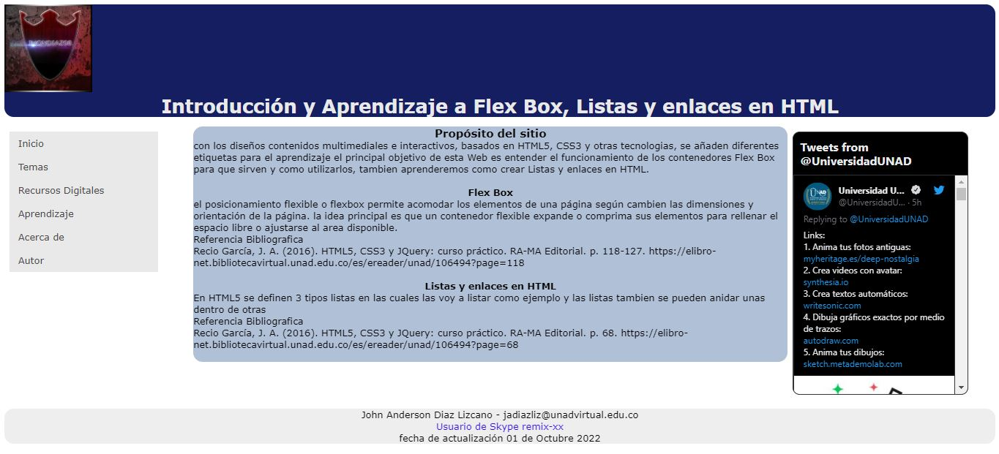

Recurso Digital Audio Autoria propia
Inicio
Temas
Tema 1 Flex Box
Tema 2 Lista y Enlaces en html
Recursos Digitales
Audio 1
Recurso 2
Aprendizaje
Actividad 1
Actividad 2
Acerca de
Autor
Tweets by UniversidadUNAD
